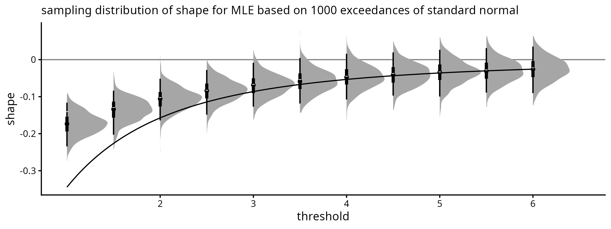
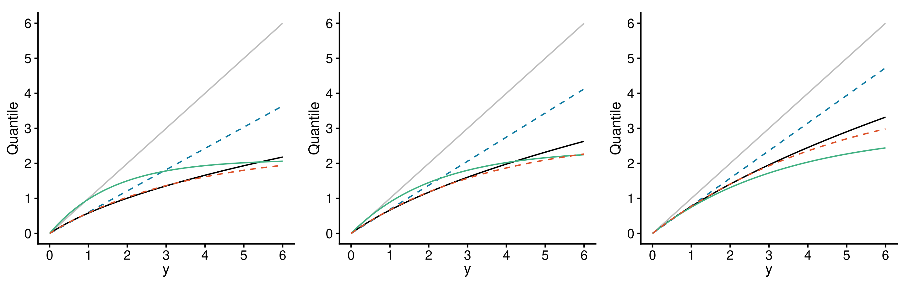
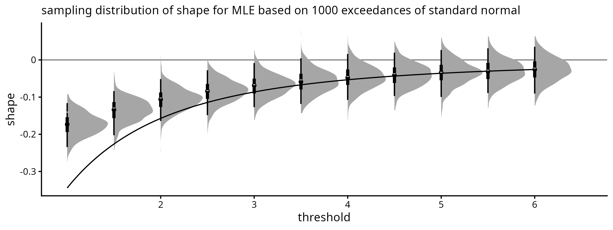
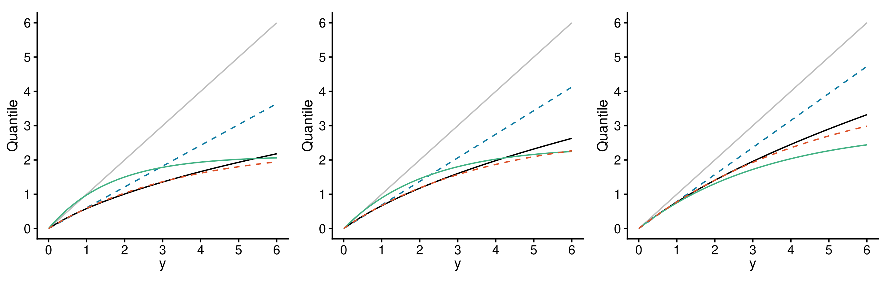
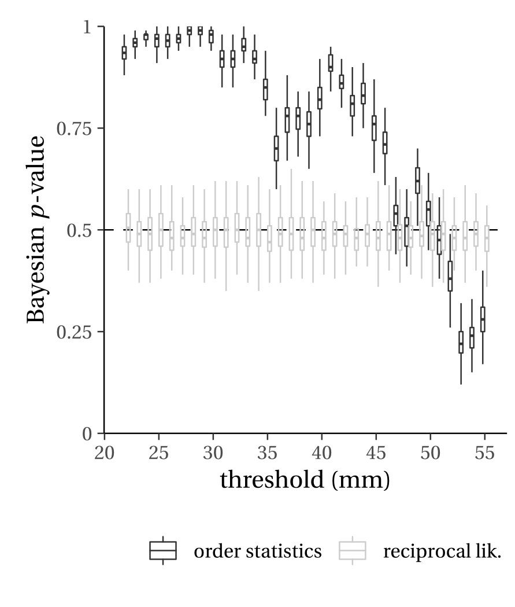
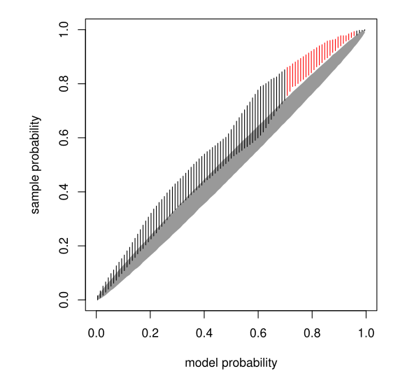

EVA 2025
Friday, Jun 27, 2025
In the simplest applications:
Bias and variance trade-off:
Since the limit holds as \(u\) increases to the upper support point of \(X\), we must use a so-called intermediate sequence \(n_u/n\to 0\) as \(n_u\to\infty\) for consistency.
When \(\xi>-1\), we have \[\mathsf{E}(X-u) = \sigma_u/(1+\xi).\]
The GPD can be derived from a limiting Poisson process \({\mathcal P}\) under which rare events occur in the \((t,y)\)-plane with measure \[\begin{align*} \Lambda[(t',t)\times[u,\infty)] = (t_2-t_1)\{1+\xi(u-\eta)/\sigma\}^{-1/\xi}_+, \qquad \eta \in \mathbb{R}, \sigma > 0. \end{align*}\]
The vertical coordinates of \({\mathcal P}\) can be generated as \[\begin{align*} \eta + \frac{\sigma}{\xi}\Bigg\{\Bigg(\sum_{j=1}^r E_j\Bigg)^{-\xi} - 1\Bigg\}, \quad r=1,2,\ldots; \end{align*}\] where the \(E_j\) are independent exponential random variables.
Fit the Poisson process model and transform the data to a unit-rate Poisson process.
The choice of threshold then amounts to choosing the highest value for which the transformed observations are consistent with a unit-rate Poisson process.
Threshold-stability and the Markov nature of order statistics \(X_{(1)}\leq\cdots\leq X_{(n)}\) of a simple random sample drawn from \(\mathsf{GP}(\sigma,\xi)\) imply that the joint density of the order statistics is \[\begin{equation} \label{eq:Renyi} \prod_{j=2}^n f(x_{(j)} \mid x_{(j-1)}) f(x_{(1)})= \prod_{j=1}^n \frac{1}{\sigma_j}\left\{1 + \frac{\xi}{n+1-j}\frac{(x_{(j)}-x_{(j-1)})}{ \sigma_j}\right\}^{-(n+1-j)/\xi-1}_+, \end{equation}\] where \(\sigma_j = (\sigma+\xi x_{j-1})/(n+1-j)\) and \(x_{(0)}=0\).
This extends the Rényi representation for exponential data and provides a likelihood if the parameters are allowed to change at order statistics, provided that the parameters for the increment \(X_{(j)}-X_{(j-1)}\) depend on the order statistics up to \(X_{(j-1)}\).
Stein (2023) explores this idea to replace the threshold by a weighting scheme of the observations.
Consider the problem of selecting a threshold amongst candidates \(u_1 < \cdots < u_k.\)
There are earlier reviews of the topic, but the literature keeps increasing.
We provide an extensive review of threshold selection mechanisms for peak over threshold analysis, including
In practice, we care about
Benchmarking the method based on proximity with the asymptotic shape parameter is not a good point of reference.
Scale and shape parameters are negatively correlated.
Smith (1987) show that a better approximation is obtained by letting the shape vary with \(u\), with \[\xi_t = r'(u),\] where \[r(t) = \{1-F(t)\}/f(t)\] is the reciprocal hazard function.


Generalized Pareto distribution is threshold stable (shape is constant).
Which threshold would you choose?
Hill, PORT and random block maxima (Wager 2014) estimates as a function of \(k\) (sample paths of RBM are \(\mathcal{C}^{\infty}\)).
Build extended models with additional parameters (with continuity constraints) and test for equality of shape
Northrop and Coleman (2014): piecewise generalized Pareto model, score tests for equality.
Embed generalized Pareto \(F(x;\sigma,\xi)\) in a more flexible model with the same tail properties using a continuous distribution function \(G_\kappa\) on \([0,1]\) (Naveau 2025).
The EGP\((\sigma,\xi, G_\kappa)\) distribution function is then \[\begin{align*} \Pr(X\leq x) = G_\kappa\{ F(x;\sigma,\xi)\}. \end{align*}\]
Test for restriction to generalized Pareto sub-model using likelihood ratio tests (profile).
Glue a distribution for the bulk with one for the tail using a mixture of disjoint components below \(u\) (bulk) and above \(u\) (generalized Pareto). See Scarrott and MacDonald (2012) and Hu and Scarrott (2018).
Can also be done on quantile scale (Danielsson et al. 2019).
Thompson et al. (2009) propose using constant values \[\tau_j = \widehat{\sigma}_j - \widehat{\xi}_j u_j\] and performing Pearson’s test of normality for the differences \(\tau_{j+1} - \tau_{j}\) (\(j=1, \ldots, k-1\)), stopping whenever the hypothesis is rejected at level \(\alpha = 0.2\).
Wadsworth (2016) obtains asymptotic joint distribution of MLE from a superposition of Poisson processes.
Build independent increments of shape to form a white noise sequence \(\xi^*_i=(\hat{\xi}_{u_{i+1}}-\hat{\xi}_{u_i})/\{(I^{-1}_{u_{i+1}}-I^{-1}_{u_{i}})_{\xi,\xi}^{1/2}\}\).
Lee, Fan, and Sisson (2015) propose constructing a threshold stability plot showing Bayesian \(p\)-value for a summary statistic against thresholds, capturing the agreement between sample and simulated data from the posterior distribution.
Under null hypothesis, \(p\)-values should be around 0.5.

Northrop, Attalides, and Jonathan (2017) propose a related Bayesian method based on leave-one-out cross validation with a binomial-generalized Pareto (BGP) model and a single validation threshold \(v > u_k\) above which we assess the model performance.
The measure of goodness-of-fit proposed is an estimate of the negated Kullback–Leibler divergence, \[\begin{align*} \widehat{T}_v(u_i) = \sum_{i=1}^n \log\{ \widehat{f}_v(x_r \mid \boldsymbol{x}_{-r}, u_i)\}. \end{align*}\] The selected threshold is the one among the candidates maximizing this diagnostic.
Further propose using Bayesian model averaging to account for the uncertainty originating from threshold selection.
Build quantile-quantile (QQ-) plot, with pointwise confidence intervals can be obtained using a parametric bootstrap.
Each bootstrap sample \(b=1, \ldots, B\), estimate the empirical quantile function \(F_{b}\), which is evaluated at the plotting position \(p_i=i/(n+1)\) for \(i=1, \ldots, n.\)
Varty et al. (2021) and Murphy, Tawn, and Varty (2025) propose repeating this with simulated iid data from \(F_0\) (tolerance intervals).

Build metric based on exponential (or generalized Pareto quantile \(F_0^{-1}\{p_i\}\) against \(F^{-1}_{b}(p_i)\) with mean absolute difference or mean squared difference.
Pick the threshold with the smallest average distance is chosen.
We considered 13 different distributions from simulation studies in Choulakian and Stephens (2001) and Schneider, Krajina, and Krivobokova (2021).
The paper also compares 18 different semiparametric methods using Hill-type estimator for heavy-tailed data.
evmix: An R Package for Extreme Value Mixture Modeling, Threshold Estimation and Boundary Corrected Kernel Density Estimation.” Journal of Statistical Software 84 (5): 1–27. https://doi.org/10.18637/jss.v084.i05.

Comments on Wadsworth (2016)
Fails 17% of the time in our simulations with equally spaced quantiles.